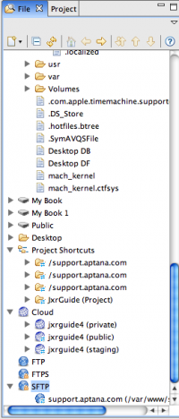
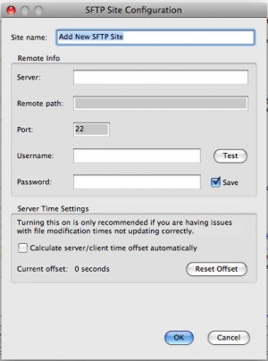
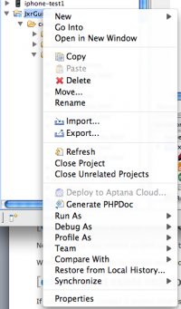

Create a new FTP connection
- Using the File browser, scroll down the tree until you see the branches for FTP, FTPS and SFTP (the latter may only be available if you have Aptana Studio Pro).
- Right click on the appropriate protocol and choose Add New FTP (or Add New FTPS or Add New SFTP) Site.
- Complete the setup form with your remote site's details.
- Tip: Use the Test button! This will let you know that your setup is correct.
- Click OK.
  File browser
File browser
{kind=link}
 SFTP Configuration
{kind=link}
Note: You can do this in the wizards but cleaner to explain this way.
Project exists remotely already
- Create a new remote project using the New Project Wizard. This is in the Aptana Projects folder on the first wizard screen.
- On the third wizard screen select the FTP connection, leave the 'Download Files Now' box checked and click Finish.
When you're ready to upload new code right click on the project folder and chose Synchronize (to choose which files/foolders are changed) or Upload (to push any changed files/folders) from the Synchronize menu.
Project exists only locally
- If you've not yet created a project (that is, the files live in a directory but there's no Studio project), find the top-level folder in the File browser, right click on it and select Promote to Project.
- Right click on the project name in the Project browser and choose Create New Synchronization Connection from the Synchronize menu. Select the connection you created in the previous step from the server list.
When you're ready to upload new code right click on the project folder and chose Synchronize (to choose which files/foolders are changed) or Upload (to push any changed files/folders) from the Synchronize menu.
 Project Context Menu
{kind=link}